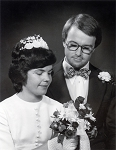

Ulla-Stina Forsell
Administratör, utbildningssamordnare, Piteå studiecentrum.
| Född: | 1949 Boliden, Skellefteå lfs, Skellefteå sn. [1] | |
|---|
| Examen: | 1968 Studentexamen i Umeå. | Ekonomisk språklig gren vid Handelsgymnasiet. |
|---|
| Utbildad: | från 1968-09 till 1971-12 Umeå Universitet. | Studier i engelska och tyska språket. |
|---|
| Lärarvikarie: | från 1972-08 Hudiksvall, Hudiksvalls kn. | |
|---|
| Kanslist på 'Sri Lankas Vänner: | 1984 Klubbgärdet, Piteå lfs, Piteå kn. | |
|---|
| Utflyttad till: | 1973-01 Piteå, Piteå sfs. Piteå kn. | |
|---|
| Omflyttad till: | 1973-06 Durrnäs, Piteå lfs, Piteå kn. | |
|---|
| Vigsel: | 1974-07-06 Bolidens kyrka, Bolidens fs, Skellefteå kn. | Vigselförrättare: Torsten Forsell, komminister i Fällfors fs. |
|---|
| Omflyttad till: | 1975-08 Jungmansgatan 4, Skuthamn, Piteå lfs, Piteå kn. | |
|---|
| Inflyttad till: | 1983-07 Pionen 6, Laxstigen 25, Klubbgärdet, Piteå sfs, Piteå kn. | |
|---|
| Levde: | 1991 Pionen 6, Laxstigen 25, Klubbgärdet, Piteå sfs, Piteå kn. [2] | |
|---|
| Skilsmässa: | 1999 Pionen 6, Laxstigen 25, Klubbgärdet, Piteå sfs, Piteå kn. | |
|---|
Personhistoria
| Årtal | Ålder | Händelse |
|---|
| 1949 |
|
Födelse 1949 Boliden, Skellefteå lfs, Skellefteå sn [1] |
| 1968 |
|
Examen 1968 Studentexamen i Umeå |
| >1968 |
|
Utbildning från 1968-09 till 1971-12 Umeå Universitet |
| >1972 |
|
Lärarvikarie från 1972-08 Hudiksvall, Hudiksvalls kn |
| 1973 |
|
Utflyttad till Jan Fredman 1973-01 Piteå, Piteå sfs. Piteå kn |
| 1973 |
|
Omflyttad till Jan Fredman 1973-06 Durrnäs, Piteå lfs, Piteå kn |
| 1974 |
|
Vigsel Jan Fredman 1974-07-06 Bolidens kyrka, Bolidens fs, Skellefteå kn |
| 1975 |
|
Sonen David Fredman föds 1975 Durrnäs, Piteå, Piteå lfs, Piteå kn |
| 1975 |
|
Omflyttad till Jan Fredman 1975-08 Jungmansgatan 4, Skuthamn, Piteå lfs, Piteå kn |
| 1977 |
|
Sonen Musiker Peter Fredman föds 1977 Skuthamn, Piteå lfs, Piteå kn |
| 1982 |
|
Dottern Maria Fredman föds 1982 Skuthamn, Piteå lfs, Piteå kn |
| 1983 |
|
Inflyttad till Jan Fredman 1983-07 Pionen 6, Laxstigen 25, Klubbgärdet, Piteå sfs, Piteå kn |
| 1984 |
|
Kanslist på 'Sri Lankas Vänner 1984 Klubbgärdet, Piteå lfs, Piteå kn |
| 1986 |
|
Fadern Verkmästare vid Bolidens Gruvaktiebolag Birger Algot Forsell dör 1986-10-08 Bjurliden 1:522, Torget 2, Boliden, Bolidens fs, Skellefteå kn [3] |
| 1991 |
|
Levde Jan Fredman 1991 Pionen 6, Laxstigen 25, Klubbgärdet, Piteå sfs, Piteå kn [2] |
| 1999 |
|
Skilsmässa Jan Fredman 1999 Pionen 6, Laxstigen 25, Klubbgärdet, Piteå sfs, Piteå kn |
| 2009 |
|
Modern Gerda Birgit Signhild Brudell dör 2009-02-15 Öjebyn, Piteå lfs, Piteå kn |
Källor
| [1] | Mtl Västerbottens län 1971 |
| |
| | |
| [2] | Mantalslängd 1991, Norrbottens län |
| |
| | |
| [3] | SPAR 90, RTB 86 |
| |
|
|  |
| 1974-07-06. Ulla-Stina och Jan. Vigsel i Bolidens kyrka. |
|
{kind=link}